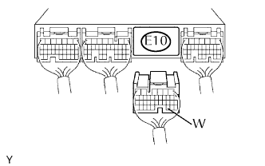
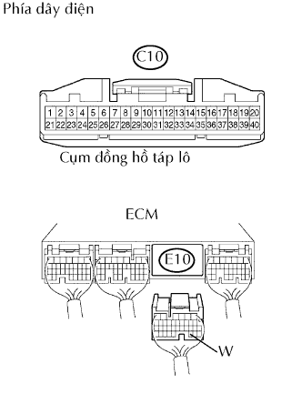

HỆ THỐNG SFI > Mạch Đèn MIL |
| 1.KIỂM TRA RẰNG ĐÈN MIL SÁNG LÊN |
Thực hiện khắc phục hư hỏng theo đồ thị dưới đây.
| Điều kiện | Đi đến |
| MIL luôn sáng | A |
| MIL không sáng | B |
|
| ||||
| A | |
| 2.KIỂM TRA XEM ĐÈN MIL CÓ TẮT KHÔNG |
Nối máy chẩn đoán với giắc DLC3.
Bật khóa điện đến vị trí ON và bật máy chẩn đoán ON.
Kiểm tra xem các mã DTC đã được lưu chưa (Xem trang Kích chuột vào đây). Nếu các mã DTC xuất hiện, hãy ghi chúng lại.
Xoá các mã DTC bằng máy chẩn đoán (Xem trang Kích chuột vào đây).
Kiểm tra xem đèn MIL tắt.
|
| ||||
| NG | |
| 3.KIỂM TRA DÂY ĐIỆN (NGẮN MẠCH) |
|  |
Ngắt giắc nối E10 của ECM.
Bật khoá điện ON.
Kiểm tra rằng đèn MIL không sáng.
|
| ||||
| NG | |
| 4.KIỂM TRA DÂY ĐIỆN (ECM -ĐỒNG HỒ TÁP LÔ) |
|  |
Ngắt giắc nối E10 của ECM.
Ngắt giắc nối C10 của đồng hồ táp lô.
Đo điện trở của các giắc nối phía dây điện.
| Nối dụng cụ đo | Điều kiện tiêu chuẩn |
| E10-30 (W) - C10-39 | Dưới 1 Ω |
| E10-30 (W) hay C10-39 - Mát thân xe | 10 kΩ trở lên |
|
| ||||
| OK | ||
| ||
| 5.KIỂM TRA XEM ĐÈN MIL SÁNG KHÔNG |
Kiểm tra rằng đèn MIL sáng khi bật khóa điện đến vị trí ON.
|
| ||||
| NG | |
| 6.KIỂM TRA RẰNG ĐỘNG CƠ KHỞI ĐỘNG ĐƯỢC |
Bật khoá điện ON.
Khởi động động cơ.
| Kết quả | Đi đến |
| Động cơ chết máy | A |
| Động cơ không khởi động* | B |
|
| ||||
| A | |
| 7.KIỂM TRA CỤM ĐỒNG HỒ TÁP LÔ (MẠCH ĐÈN MIL) |
Xem quy trình chẩn đoán đồng hồ táp lô (Xem trang Kích chuột vào đây).
|
| ||||
| OK | ||
| ||